Music software
made simple.
Making music comes with small, everyday annoyances. Booting a whole DAW just to try one synth. Guessing what key a song is in. Wanting everything your computer plays at a different pitch.
Developed by another producer: we present idea-based apps that each make one of them go away.
- Platform
- Windows 10 & 11, and macOS (beta). Desktop applications.
- Price
- About $10 an app. One code per purchase — it runs on one computer at a time and moves with you when you change computers.
- Status
- Instrument Player, 432hz and Visualize are out now. Beatmaker and MultiConsole are in active development.
Instrument Player
Load, Play, Recover, Edit, Export.
Instrument Player scans the VST3 instruments already installed on your machine and opens any one of them on its own — full interface, keyboard input, audio out, nothing else in the way.
And MIDI Replay keeps the last 5 minutes of your playing without pressing Record, so the phrase you stumbled into is still there — ready to edit and export as .mid.
432hz
Your whole computer sound, retuned
432hz retunes everything your PC plays, live. Choose any pitch you like — A4 = 432 Hz, the most popular choice, is where it starts.
One button switches between original and new, so you can hear the difference.
Visualize
Everything your PC plays, seen at a glance.
A giant full-screen audio analyser for everything your PC plays: spectrum, loudness, stereo width, notes, key and chords on one screen.
It listens to whatever your computer is playing, so there’s no plugin and nothing to set up in each app. $19 launch price until Nov 6, then $29 · 7-day free trial.
Beatmaker
An easy-to-use DAW, just for beat design.
Pick a genre, press Generate, and get drums, bass, chords and melody built from the samples already on your PC — sorted for you, never moved.
Then keep changing it: shuffle sounds, regroove, swap chords, lock what works. Export audio, stems or MIDI when the idea lands.
MultiConsole
Live mixing console for your PC audio.
Analyze and Experiment
Use our 11 knobs to hear what your audio output would sound like with a little touch. Autotune, Saturator, Compressor, Band Sweep, Chorus, Delay, Reverb, Limiter, Mid/Side, Width and Gain knobs are all available.
Make Your Own Effect Chain
Change the state and visibility of any knob and line them up the way you want. From live vocal mixing to sound analysis, MultiConsole awaits your touch.
Pricing.
One computer at a time. Each purchase is one code that runs on one computer — move it to a new one whenever you switch. No subscription, no seats.
Hear it first.
Beatmaker and MultiConsole are still being built. Leave your email and you’ll get one email when they’re ready to buy.
We will give you one email when the app is ready.
Instrument Player
Open it, pick an instrument, play. Your VST3 instruments, without the DAW.
Fig. 1 — Open it and pick an instrument Click to enlarge
Free launch month
Instrument Player will be free for its first month, and anyone who claims it then keeps it for good.
Starts in
Free launch month
Purchase License
For its first month, Instrument Player is free. Claim a license now and it’s yours to keep — the license never expires and keeps working for good.
Every update released during the free month is included, so fixes reach you too. From October 20, new versions come with the paid app — your free license keeps working, for good, on the last free-month version.
Windows will probably warn you. Instrument Player isn’t code-signed yet, so the first time you run the installer Windows may show a blue “Windows protected your PC” box. Choose More info, then Run anyway. That warning is about a certificate we haven’t bought yet, not about the file — and dismissing it never uses up your license. More on this
Free for another , then $10
Purchase License
- The Windows installer, downloadable straight after payment
- One license code, emailed to the address you pay with
- Runs on one computer at a time — move it when you change computers
Free during the launch month. No payment, no card.
Payment is handled by Paddle.com, our Merchant of Record — YBK Audio never sees your card details. Instant delivery by email.
By purchasing you agree to the Terms.
One computer at a time — please read. Your code runs on one computer at a time. Changing computers? Open Settings in the app on the old one and press Release license, then enter the code on the new one. If the old computer has broken down, write to us and we’ll release it for you. A license can be moved once every 30 days.
Your license keeps working after
- Resetting or reinstalling Windows on the same computer
- Windows updates, driver updates and app updates
- Swapping the drive, RAM, graphics card or monitor
- Changing your network, Wi-Fi adapter or VPN
Move your license (Settings > Release license) when you
- Replace the motherboard or CPU
- Change to a different computer
- Run the app inside a new virtual machine
- Old computer broken? Write to us and we’ll release it
The payment window didn’t open
Our payment provider’s checkout couldn’t load. This is usually an ad or tracker blocker, or a connection that dropped for a moment. Reload the page and press Purchase again.
Windows & Mac
Download the App
Install Instrument Player, open it, and paste in the license code from our email. The code and the app are separate: the app always downloads from here.
Beta, not signed by Apple yet: the first time, open System Settings > Privacy & Security and click Open Anyway.
Demo — see it in action Watch on YouTube
Instrument Player runs the virtual instruments you already own as their own app. A lot of great synths only ship as plugins — so trying a sound or playing for five minutes means booting a DAW and making a track. Instrument Player removes the timeline, the tracks and the mixer, and keeps only the part you wanted: one instrument, ready to play.
It finds the VST3 instruments on your PC, shows the plugin’s own interface at exactly its size, and takes input from every MIDI controller you plug in — or from your computer keyboard.
And it never misses the take. MIDI Replay keeps the last 5 minutes of your playing in memory without you pressing Record, so the phrase you stumbled into can be pulled back, tidied up in the piano roll and exported as a .mid file for your DAW. What leaves the app is MIDI — the notes you played — not audio.
Find and play your VST instrument
Every VST3 instrument on your PC in one searchable list, effects filtered out and favourites pinned to the top. Pick one and it opens at its own size, ready to play.
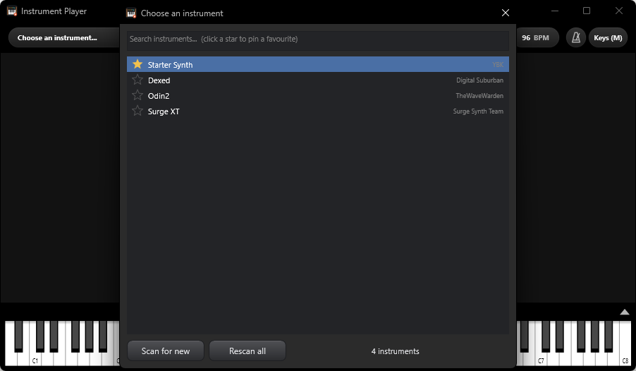
Add any VST audio effect
Chain your own VST3 effects after the instrument, in the order the sound runs through them. The list tells you what kind each effect is.
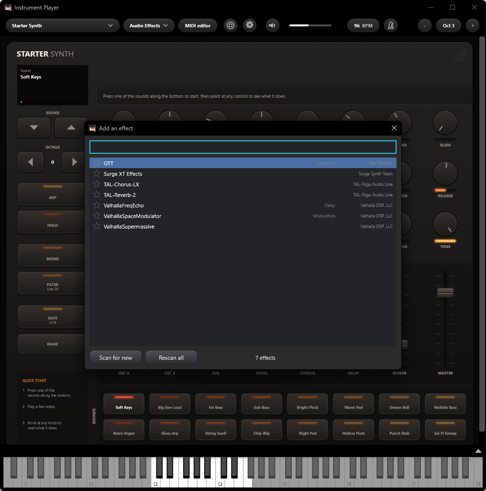
All MIDI input replayable
The last 5 minutes of your playing are always in memory — nothing to arm, nothing to press. What you played while warming up is still there, exactly as you played it.
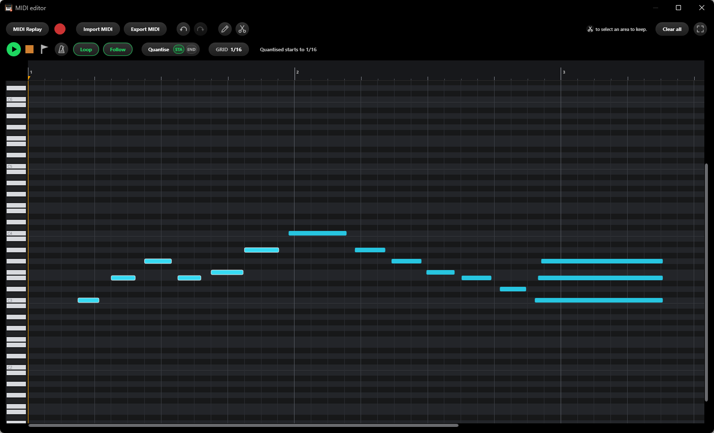
Edit and export MIDI
Quantise, copy, paste, duplicate, box select and zoom on a tempo grid, then export a standard .mid file for your DAW. MIDI — the notes you played — not audio.
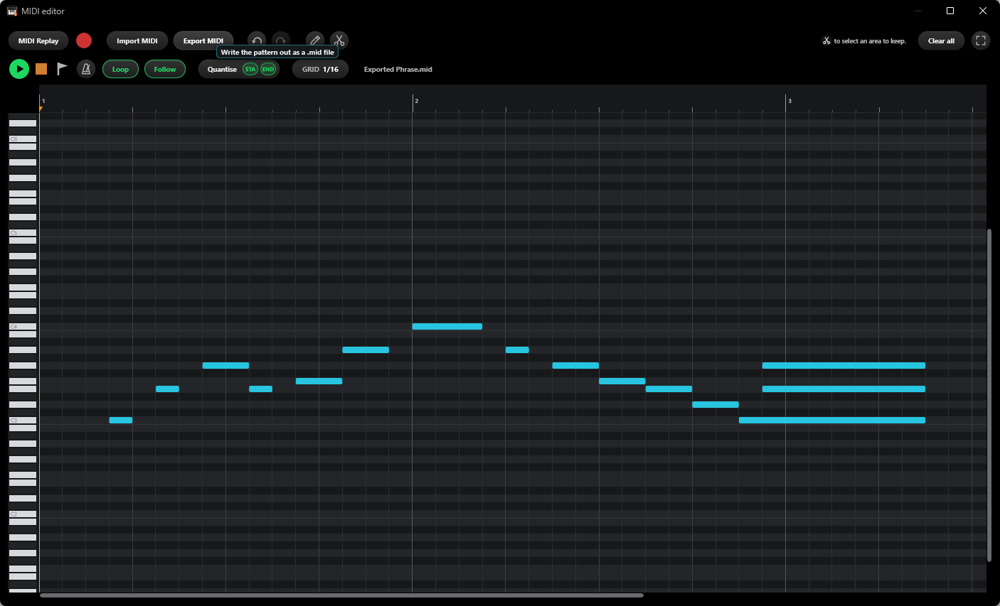
Use your computer keyboard as a MIDI controller
Press M and your keyboard becomes a piano: one row, or two rows for over two octaves, with Z and X or [ and ] to change octave, or keys of your own. Every real MIDI input still works at the same time, including ones plugged in while the app is running.
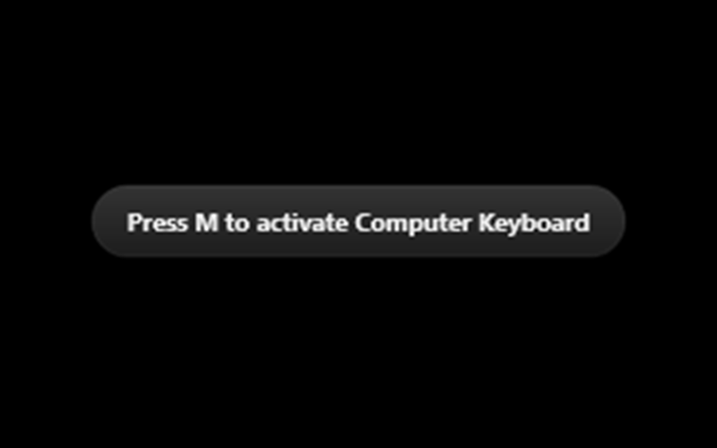
Low CPU and latency
CPU and latency sit in the toolbar while you play. WASAPI exclusive mode runs at roughly 5–10 ms, set under the gear icon.
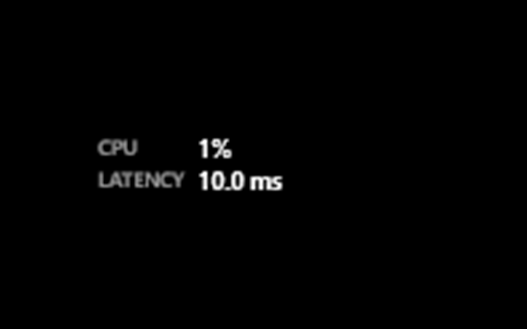
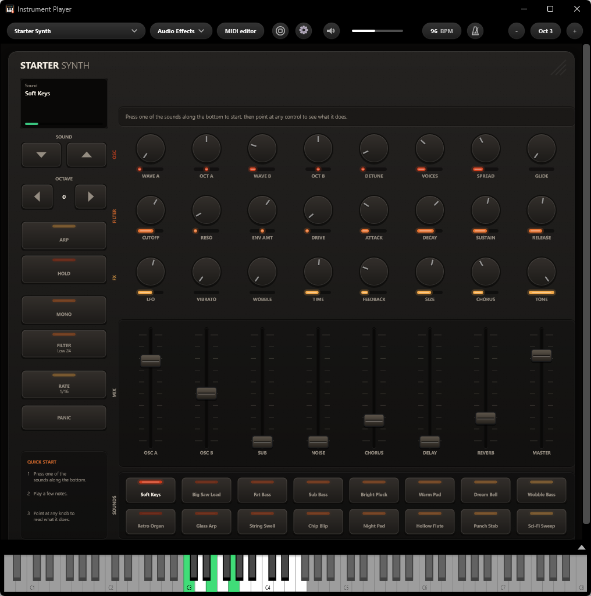
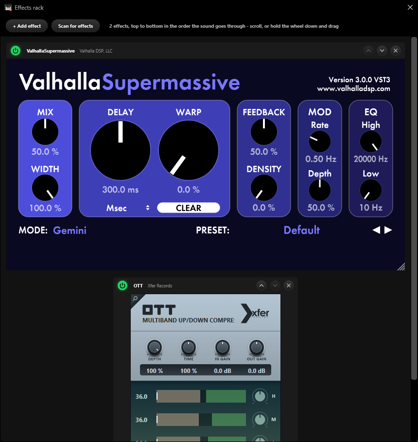
| Type | Standalone desktop application |
|---|---|
| Hosts | VST3 instruments installed on your system (effects are filtered out) |
| Plugin scan | Separate process · scan new only or rescan all · favourites |
| Input | All MIDI inputs, hot-plug · computer keyboard (M), one or two rows, Z/X or [ ] for octaves |
| MIDI capture | MIDI Replay, always on · Record · piano-roll editor |
| Files | Export and import standard .mid — MIDI only, no audio recording or export |
| Audio | WASAPI shared or exclusive · DirectSound |
| Remembers | Last instrument and its patch, audio device, output volume |
| Platform | Windows 10 / 11 |
| Licence | One computer at a time — move it to a new one from Settings, once every 30 days |
| Price | $10.00 — one-time, no subscription |
432hz
Your whole computer sound, retuned live
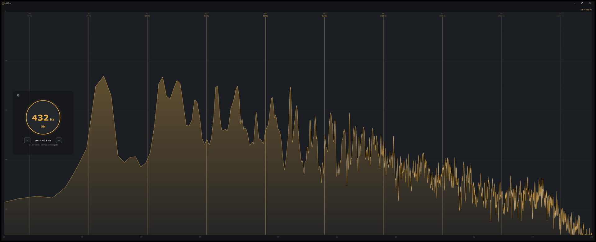
Fig. 1 — Maximised, the spectrum fills the screen: here at A4 = 432 Hz, with every A marked Click to enlarge
Almost ready
The free download opens here very soon. Check back in a day or two.
Windows & Mac
Download the App
432hz is free, for Windows and Mac. Type your email, click the link we send you, and the download links arrive in the next email. No license code, nothing to activate.
If you’d like to support it, name a price. Anything you add helps us make your experience better — the app is exactly the same either way.
On Windows, Windows will probably warn you. 432hz isn’t code-signed yet, so the first time you run the installer Windows may show a blue “Windows protected your PC” box. Choose More info, then Run anyway. That warning is about a certificate we haven’t bought yet, not about the file. More on this
On a Mac, macOS will warn you too. Open the .dmg and drag 432hz into Applications. 432hz isn’t signed by Apple yet, so the first time you open it macOS says it can’t verify the app: go to System Settings > Privacy & Security and click Open Anyway. Then allow System Audio Recording when macOS asks — without it, 432hz can’t hear anything to retune.
432hz changes the pitch of everything your PC plays, live, to whatever you choose — without changing the tempo. Set A4 to any frequency and every app follows: your browser, music player, games, video calls, your DAW.
The most common reason to do this is A4 = 432 Hz, and that’s where the app gets its name. Almost all music is tuned to A4 = 440 Hz; some musicians and listeners prefer 432 Hz, a little lower. But 432 is just one setting: tune up or down, match an instrument tuned to a different pitch, or try any tuning you’re curious about.
On Windows it runs inside Windows’ own audio engine as an audio effect; on a Mac it uses macOS’s own system-audio tap. Either way there’s no driver or virtual cable to set up. Changes within two semitones of 440 — 432 included — use an exact engine: every note from 41 Hz to 4 kHz lands within 0.2 cents, with about 10–20 ms of delay on Windows. Bigger changes switch to a second engine on their own, which adds delay (about 120 ms on Windows).
Every app, at once
Your browser, music player, games, video calls, your DAW — whatever your computer plays to your speakers or headphones is retuned. It works inside the system’s own audio, so there’s nothing to set up in each app.
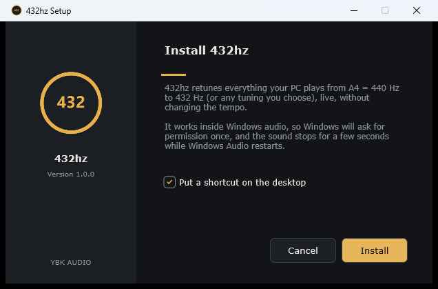
Before and after, one click
The big button switches between your new pitch and the original while the music keeps playing — no click, no gap. Left-click the gold ring by the clock to do the same from the tray.
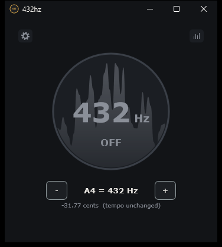
Any pitch you want
Set A4 anywhere from 1 Hz to 20,000 Hz: step with − and + (hold to repeat), or double-click the number and type it. Prefer to think in C? Tune by C4 instead.
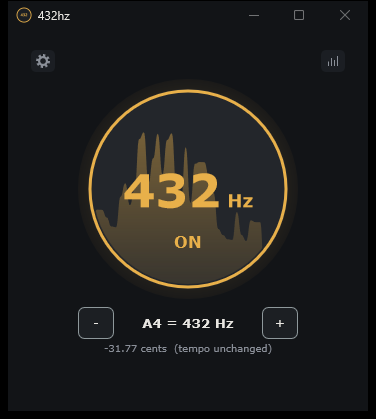
See where your tuning sits
Open the spectrum and every A (or C) of your tuning is marked, from the lowest octave to the highest. Maximise the window and it fills the screen.
Right on pitch
Every speaker’s clock runs a little fast or slow. 432hz measures yours and corrects for it, so the pitch comes out exactly where you set it — a 440 Hz tone really becomes 432 Hz at A4 = 432.
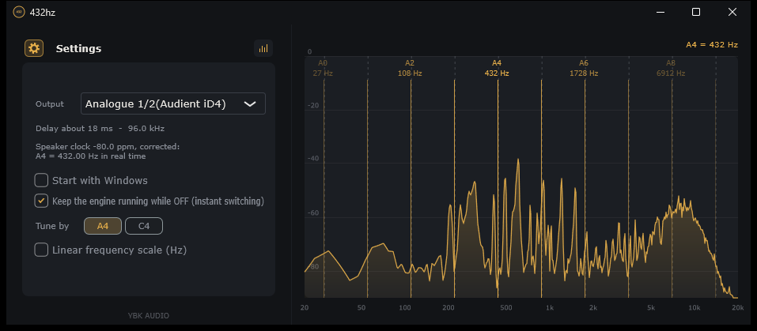
Out of sight
Close the window and 432hz keeps going from the tray (the menu bar on a Mac). Turn on Start with Windows (Open at login on a Mac) and every session starts at your pitch. Uninstall it and your sound is back exactly as it was.
| Type | Desktop app with a tray / menu-bar icon · changes the pitch of all system audio |
|---|---|
| Pitch | Any A4 from 1 to 20,000 Hz, or set by C4 · tempo unchanged · starts at A4 = 432 Hz (−31.77 cents) |
| Accuracy | Within two semitones of 440 (432 included): within 0.2 cents from 41 Hz to 4 kHz · bigger shifts: within about 4 cents, though far downward shifts can leave the lowest notes up to 35 cents off · speaker clock drift corrected |
| Delay | On Windows: about 10–20 ms within two semitones of 440, about 120 ms for bigger shifts · CPU about 1.5–2% |
| Works with | Windows: apps that play through Windows’ normal (shared) audio — ASIO and exclusive-mode audio bypass Windows’ audio engine and are not tuned. Mac: what macOS plays, through its system-audio tap. |
| Install | Windows: one administrator prompt for the Windows audio step · the sound drops for a few seconds while it installs · speakers added later (new USB or Bluetooth) are retuned after running the installer again. Mac: drag 432hz into Applications · allow System Audio Recording when asked |
| Uninstall | Windows: Settings > Apps — your speakers go back to how they were. Mac: quit it from the menu bar and drag it to the Trash; it changes nothing in the system |
| Platform | Windows 10 / 11, 64-bit · macOS 14.2 (Sonoma) or later, Apple Silicon and Intel |
| Price | Free · pay what you want, if you like |
MultiConsole
Studio effects on everything your PC plays, in real time.
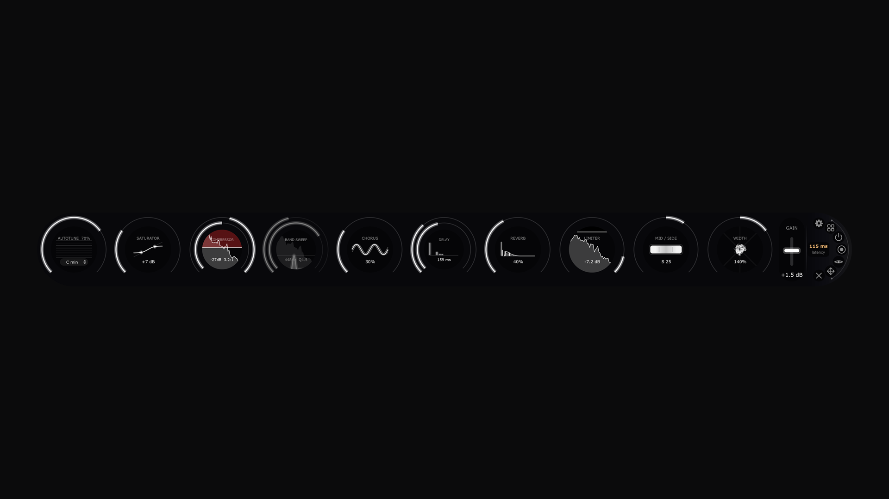
Fig. 1 — Eleven live modules on one capsule Click to enlarge
MultiConsole is a small capsule that floats above every other window and runs your computer’s entire audio output through a chain of studio effects — YouTube, Spotify, games, the browser, anything. Autotune, saturation, compression, a band isolator, chorus, delay, reverb, a limiter, Mid/Side, stereo width and gain, all live, before the sound reaches your speakers or headphones.
Use it to study a reference: listen to only the mid, only the sides, or one narrow frequency band of any song you can stream. Or use it for fun: hard autotune a video, drown a stream in reverb, then hit Record and keep the result.
No DAW, no plugin host, no parameter pages. Almost every module is one knob — or one dial with two rings — and the knob’s centre shows you what it is doing while you turn it.
Every app, one place
Whatever is playing on your PC passes through the same chain, so one setting works on a song, a video and a game alike.
The details move with the knob
Turn up a compressor or a reverb and the ratio, make-up gain, room size and mix follow together. Every module starts neutral.
A live display in every knob
A spectrum, a stereo image, an echo timeline, a piano roll of corrected pitch — each knob’s dark centre shows its own effect as it happens.
Keep what you hear
One button records the final output to a 24-bit stereo WAV file on your computer, without dropouts.
Out of the way, never hidden
A pill-shaped window with adjustable background transparency, horizontal or vertical, that hides to the system tray.
Drag, remove, add back
Reorder the effect chain by dragging knobs on the capsule itself. A switched-off knob stays visible in grey, so its setting is never lost.
Smooth bypass and changes
Bypass the whole chain with a 20 ms crossfade and come straight back — every change ramps instead of popping.
The real delay, shown live
Driver input and output, buffer and module delay are added up and displayed on the capsule. Settings save automatically.
What you’ll need
A way to route system audio into the app: the free VB-Audio Virtual Cable, or an audio interface with a loop-back feature. Set Windows to play into the cable, then pick the cable as MultiConsole’s input and your real speakers as its output — the settings panel walks you through it.
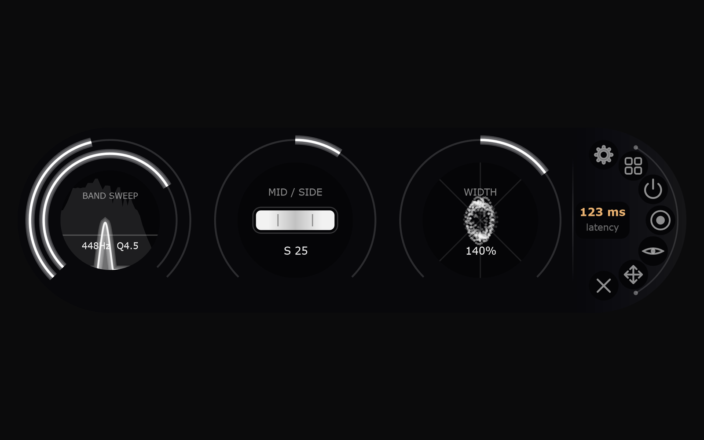
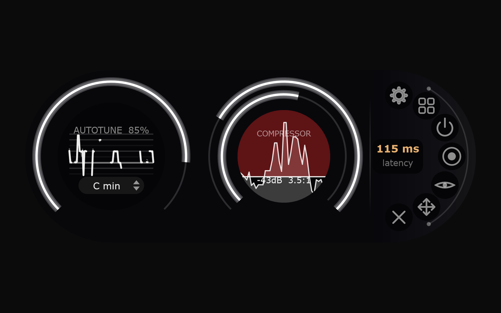
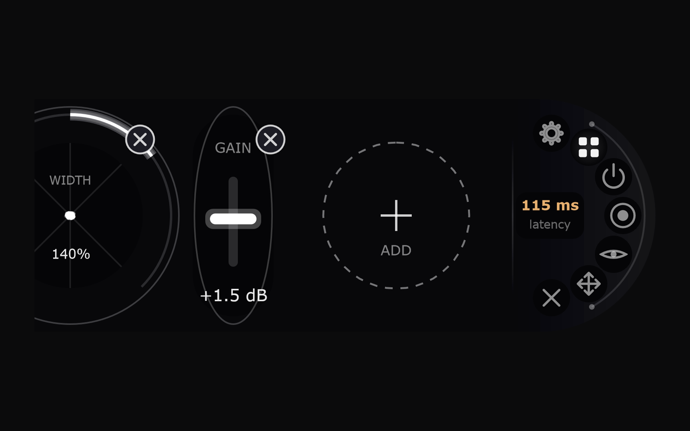
| Autotune | Hard, glide-free snap to the nearest note in your key — Chromatic or any of 24 major and minor keys. Works on vocals and on full mixes; breath and texture are left alone. About 85 ms latency while on. |
|---|---|
| Saturator | Drive 0 to +24 dB with automatic level matching, so the texture changes and the volume doesn’t. 4× oversampled. |
| Compressor | Outer ring sets threshold (0 to −60 dB); inner ring raises ratio (1:1 to 10:1) and make-up gain together. Over-threshold energy glows red on a live spectrum. |
| Band Sweep | Hear only one band. Outer ring sweeps 20 Hz – 20 kHz, inner ring scales the width 0.25× – 4×. 48 dB/oct slopes on both sides, with automatic loudness make-up. |
| Chorus | One knob raises depth, speed and mix together. |
| Delay | Stereo echo. Outer ring sets echo level and repeats; inner ring sets the gap, 20 ms to 2 s. The centre flashes an echo timeline in time with the music. |
| Reverb | One knob grows the room size and the reverb level together. |
| Limiter | Brick-wall limiter. Turning up lowers the ceiling from 0 to −60 dB; it only reduces, never adds level back. |
| Mid/Side | −100 is mid only, 0 is untouched, +100 is side only. |
| Width | 0% mono, 100% untouched, 200% twice as wide — shown as a live stereo-image cloud. |
| Gain | −24 to +24 dB output fader. |
| Type | Standalone desktop application — not a plugin |
|---|---|
| Processes | All system audio, in real time |
| Modules | 11, reorderable, each with its own on/off |
| Recording | 24-bit stereo WAV of the final output |
| Latency | Shown live; depends on your driver and which modules are on |
| Presets | Save and load; current state saves automatically |
| Requires | Free VB-Audio Virtual Cable, or an interface with loop-back |
| Platform | Windows 10 / 11 |
| Licence | One computer at a time — move it to a new one from Settings, once every 30 days |
| Price | $10.00 — one-time, no subscription |
MultiConsole pricing
- The Windows installer, downloadable straight after payment
- One license code, emailed to the address you pay with
- One activation, on the computer you install it on
MultiConsole is still being built, so it isn't for sale yet. There is no way to pay for it until it's finished.
Email me when it's outOne computer at a time — please read. Your code runs on one computer at a time. Changing computers? Open Settings in the app on the old one and press Release license, then enter the code on the new one. If the old computer has broken down, write to us and we’ll release it for you. A license can be moved once every 30 days.
Your license keeps working after
- Resetting or reinstalling Windows on the same computer
- Windows updates, driver updates and app updates
- Swapping the drive, RAM, graphics card or monitor
- Changing your audio interface, network or VPN
Move your license (Settings > Release license) when you
- Replace the motherboard or CPU
- Change to a different computer
- Run the app inside a new virtual machine
- Old computer broken? Write to us and we’ll release it
Checkout is not open yet
MultiConsole is still in development, so there is nothing to sell you today — and this button is deliberately not wired to a payment page rather than taking your money for something unfinished.
Three things have to land before this button goes live:
- The app reaches a releasable build, code-signed with a Windows installer.
- A checkout provider is connected, so card details go to them and never to us.
- Licensing is switched on, so a purchase issues a code that runs on one computer at a time and moves with you.
Visualize
Everything your PC plays, seen at a glance.
Fig. 1 — Spectrum, waterfall, stereo width in 3D and loudness on one screen Click to enlarge
Purchase License
- One license code, emailed to the address you pay with
- The app for Windows and Mac (beta), always downloadable from this page
- Runs on one computer at a time — move it when you change computers
Launch price until Nov 6, 2026, then $29. Payment is handled by Paddle.com, our Merchant of Record — YBK Audio never sees your card details. Instant delivery by email.
By purchasing you agree to the Terms.
The payment window didn’t open
Our payment provider’s checkout couldn’t load. This is usually an ad or tracker blocker, or a connection that dropped for a moment. Reload the page and press Purchase again.
Windows & Mac
Download the App
Download Visualize and open it: the 7-day free trial starts on its own, no code needed. Buy a license any time and paste in the code from our email to keep it after the trial.
Beta, not signed by Apple yet: the first time, open System Settings > Privacy & Security and click Open Anyway, then allow System Audio Recording once.
Visualize is a giant full-screen audio analyser for everything your PC plays. It listens to whatever your computer is playing — your browser, music player, games, your DAW — with no plugin and nothing to set up in each app.
Put it on a second screen while you mix, or full screen while you listen: the spectrum, loudness, stereo width, notes, key and chords are all there at a glance, and the buttons fade away when you stop moving the mouse.
Optional listen tools let you hear the mix in mono, only the parts that cancel in mono, or everything except them. They need VB-CABLE, a free virtual audio driver from another company; the analyser itself works without it.
Big, sharp spectrum
A full-screen spectrum with a waterfall of the last seconds scrolling underneath. Peak hold, a whole-song average, and a snapshot curve to compare against.
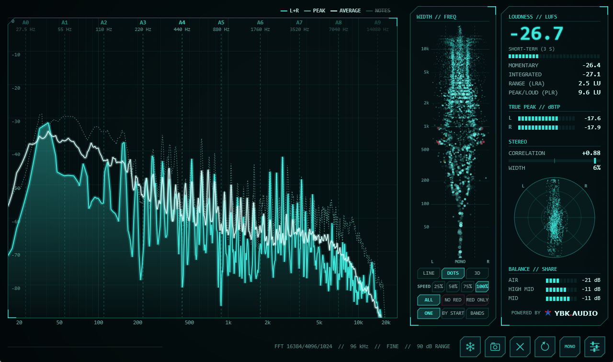
Know what’s playing
The loudest peaks are labelled with their note, like “F1 · 44 Hz”. One click listens for about 8 seconds and estimates the song’s key; a chord box then shows the chord playing now and its place in the key.
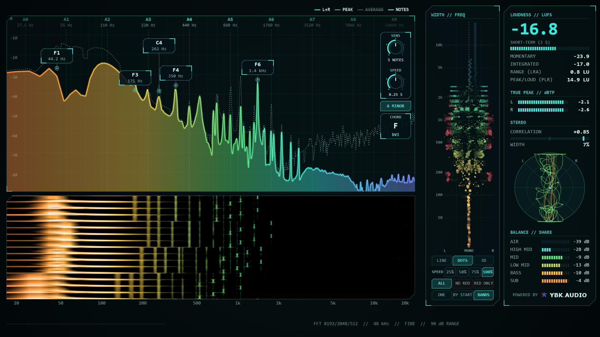
Stereo width per frequency
See how wide every frequency is — as a line, as dots (bigger dot, louder sound) or as a 3D cylinder you turn with the mouse. Sounds that cancel in mono show in red.
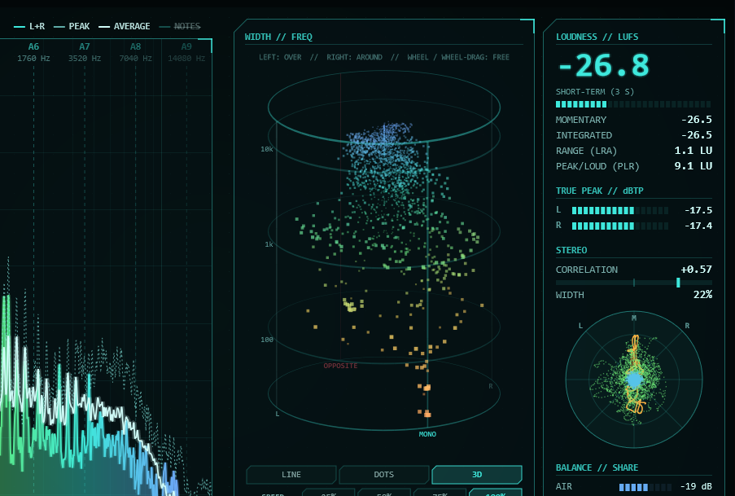
Colour by band or by sound
BANDS colours every graph by range, from orange bass to blue highs. BY START gives each sound that began at the same moment its own colour, across every graph.
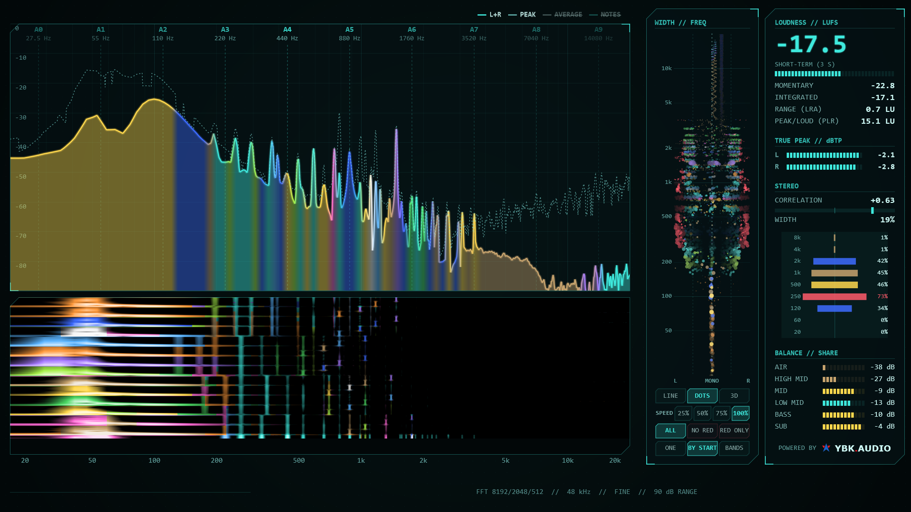
Loudness and true peak
Momentary, short-term and integrated loudness in LUFS, loudness range, peak-to-loudness ratio and true peak, measured the EBU R128 / ITU-R BS.1770 way. It starts over on its own when a new song begins.
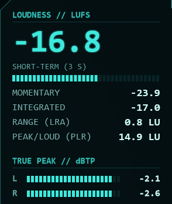
Yours To Customize
Spectrum, waterfall or both; L+R, L / R or Mid / Side; smoothing, tilt and speed; scope, polar, band or history stereo pictures. F11 shows the picture alone over the whole screen.
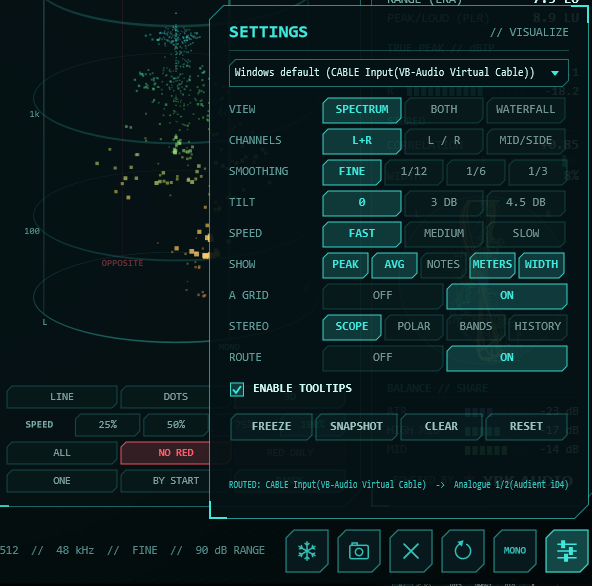
| Type | Full-screen desktop app · listens to everything your computer plays |
|---|---|
| Shows | Spectrum and waterfall · note labels · key and chord (estimates) · peak, average and snapshot curves |
| Loudness | Momentary, short-term and integrated LUFS · LRA · PLR · true peak in dBTP · measured the EBU R128 / ITU-R BS.1770 way |
| Stereo | Width per frequency (line, dots, 3D) · goniometer · polar · width per band · correlation · balance per range |
| Listen tools | Optional: mono, cancelling parts only, or everything but them · need VB-CABLE, a free separate download not made by us |
| Platform | Windows 10 / 11, 64-bit · Mac (beta): macOS 14.2 or later |
| Price | $19 launch price until Nov 6, 2026, then $29 · one-time · 7-day free trial |
Beatmaker
An easy-to-use DAW, just for beat design.
Fig. 1 — A full beat idea in one click Click to enlarge
Beatmaker is a sample-based idea DAW for beginners. Point it at the sample folders already on your PC, pick a genre and press Generate — drums, bass, chords and melody arrive together, ready to play.
It isn’t trying to be the program you finish a song in. It’s the one you start in. Shuffle the sounds, regroove the rhythm, swap the chords, add a fill, and keep pressing until something sticks. Lock the tracks you like and only the rest changes.
When the idea lands, export audio, stems or MIDI and carry on in the DAW you already use.
29 genres, one click
Boom bap to amapiano. Every genre has its own drum patterns, scales, named chord progressions, bass styles and fills.
The menu stays open
New beat, shuffle sounds, regroove, variation, humanize, fills, change chords — press them one after another until it’s right.
Every kick, found
Finds the sample folders on your drives and sorts one-shots into drum types and sound families. Your files are never moved or changed.
Patterns from your MIDI library
Studies the drum grooves you own for shared patterns, accents, swing and pocket, then uses them when it generates. The result stays on your PC.
Keep what already works
Locked tracks are skipped by every generate tool, while mute, solo, volume and pan still work.
Key, scale and chords
Detects the key, keeps bass and melody in scale, and moves every track to a new key with a single drag.
78 presets to start from
Three wavetable oscillators, filters, envelopes, LFOs and 808-style glide — bass, keys, leads, pads, plucks and more.
Audio, stems, MIDI, project
WAV, AIFF, FLAC or MP3, as one mix or one file per track — plus project files that carry their samples to another PC.
What you’ll need
Your own sounds. Beatmaker ships with no third-party samples — it builds beats from the one-shots, loops and MIDI grooves already on your computer. It opens in its own window using Microsoft Edge or Google Chrome, and MP3 export needs ffmpeg.
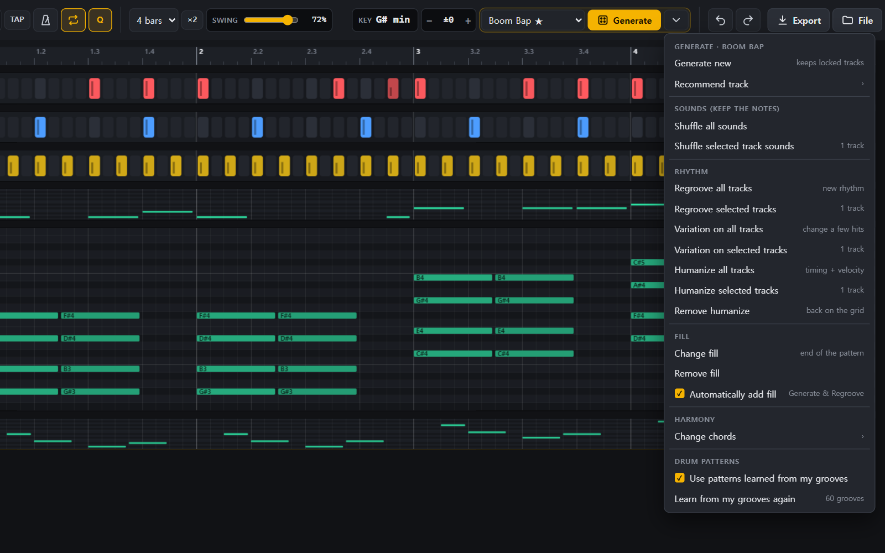
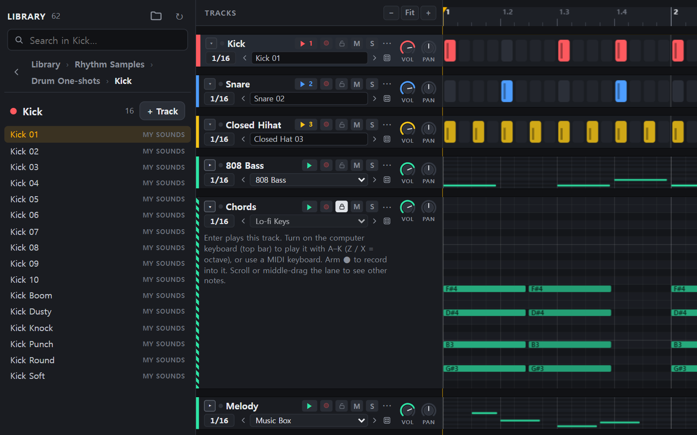
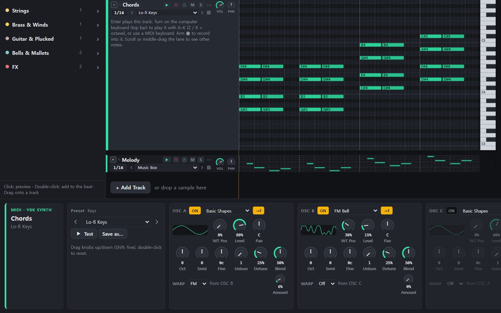
| Hip hop | Boom Bap · Trap · Drill · Lo-fi · Phonk · Jersey Club |
|---|---|
| R&B & pop | R&B · Pop · K-Pop · Synthwave · Future Bass |
| Band | Rock · Punk · Metal · Funk Break · Jazz · Blues & Country |
| Dance | House · Techno · UK Garage · Drum & Bass · Dubstep · Disco |
| Latin, Caribbean & African | Reggaeton · Dancehall · Reggae · Afrobeats · Amapiano · Baile Funk |
| Type | Standalone desktop application |
|---|---|
| Tracks | Rhythm · MIDI synth · Sampler · Audio |
| Generates | Drums, bass, chords, melody and fills |
| Patterns | 4/4, 1–8 bars |
| Export | WAV · AIFF · FLAC · MP3 · MIDI · stems · project file |
| Play in | Computer keyboard or MIDI keyboard |
| Requires | Your own samples · Microsoft Edge or Google Chrome · ffmpeg for MP3 |
| Platform | Windows 10 / 11 |
| Licence | One computer at a time — move it to a new one from Settings, once every 30 days |
| Price | $20.00 — one-time, no subscription |
Beatmaker pricing
- The Windows app, downloadable straight after payment
- One license code, emailed to the address you pay with
- One activation, on the computer you install it on
Beatmaker is still being built, so it isn't for sale yet. There is no way to pay for it until it's finished.
Email me when it's outOne computer at a time — please read. Your code runs on one computer at a time. Changing computers? Open Settings in the app on the old one and press Release license, then enter the code on the new one. If the old computer has broken down, write to us and we’ll release it for you. A license can be moved once every 30 days.
Your license keeps working after
- Resetting or reinstalling Windows on the same computer
- Windows updates, driver updates and app updates
- Swapping the drive, RAM, graphics card or monitor
- Changing your audio interface, MIDI keyboard or network
Move your license (Settings > Release license) when you
- Replace the motherboard or CPU
- Change to a different computer
- Run the app inside a new virtual machine
- Old computer broken? Write to us and we’ll release it
Checkout is not open yet
Beatmaker is still in development, so there is nothing to sell you today — and this button is deliberately not wired to a payment page rather than taking your money for something unfinished.
Three things have to land before this button goes live:
- The app reaches a releasable build, code-signed for Windows.
- A checkout provider is connected, so card details go to them and never to us.
- Licensing is switched on, so a purchase issues a code that runs on one computer at a time and moves with you.
Help
Installing, your license code, and how to reach us.
Seeing “Windows protected your PC”?
When you open the Instrument Player installer, Windows may show a blue box that says “Windows protected your PC” and “Unknown publisher”. That is Windows SmartScreen. It appears for new apps that aren’t signed with a code-signing certificate yet and haven’t built up a history with Microsoft. Instrument Player is new, and our certificate is still being issued, so for now Windows can’t tell who made it.
To install it anyway, click “More info”, then “Run anyway”. Only do this with the installer you downloaded from ybkaudio.com or from the link in our email.
This has nothing to do with your license. Your code only counts when you type it into the app. Seeing this warning, closing it, or downloading the installer again never uses up a license, so there is no need to ask for a new code.
Lost your license code?
Search your inbox for an email from license@ybkaudio.com. It has your code and the download link.
Got it free during the launch month? Enter the same email on the Instrument Player page again and we’ll send the same code again.
Bought it? Email us from the address you paid with and include the order number from your Paddle receipt.
Windows says “This app can’t run on your PC”? That almost always means the download was cut short. Compare the file with the size shown under the Download button; if it is smaller, download it again — antivirus software and unstable Wi-Fi are the usual causes.
How licenses work
- One-time purchase. You pay once. There is no subscription.
- One computer at a time. A code runs on one computer at a time. It can go onto another computer once it has been released from the first.
- Moving to a new computer. On the old computer, open Settings in the app and press Release license. Then enter your code on the new computer. If the old computer has broken down or is gone, write to us and we’ll release the license for you. A license can be moved once every 30 days.
- What doesn’t need a move. Reinstalling Windows on the same computer, app updates, and swapping the drive, memory or graphics card. A new motherboard or CPU counts as a new computer: move the license to it as above.
- Your projects and settings come too. Instrument Player keeps everything you make and set up in one folder: Documents\YBK AUDIO\Instrument Player. Copy that folder to the new computer before you start the app there, and it’s all waiting for you.
- Free launch licenses. They move like any other license, and on any computer they run the versions released during the free month, up to 19 October 2026. Download the last of them →
Contact
Questions, problems or feedback: write to us and we’ll reply within 3 business days. For anything about a purchase, include your order number.
Terms & Conditions
1. Who we are
These terms govern your purchase and use of software sold on ybkaudio.com. The seller is YBK Audio, a sole proprietorship registered in the Republic of Korea and owned by Kim Yeonbum — business registration number 288-17-02789, 221 Seolleung-ro, Gangnam-gu, Seoul, Republic of Korea. You can reach us at ybkaudio@gmail.com.
By buying, installing or using Instrument Player, MultiConsole or Beatmaker (“the Software”), you agree to these terms.
2. Payment and our reseller, Paddle
Our order process is conducted by our online reseller Paddle.com. Paddle.com is the Merchant of Record for all our orders: it processes your payment, charges and remits any sales tax or VAT, and issues your invoice. Your purchase is also subject to the Paddle Buyer Terms. YBK Audio never receives your card details.
Prices are shown in US dollars on each product page. Paddle may show the total in your local currency and add tax where required.
3. Your license
The Software is licensed, not sold. When your payment completes, you receive one license code by email. That code grants you a personal, non-exclusive, non-transferable right to install and use the Software on one computer at a time.
- One computer at a time. The code activates the Software on one computer. To use it on another computer, you move it: release it from the first computer (in the Software’s Settings, “Release license”) and activate it on the second. The Software stops running on the first computer when the license leaves it.
- Moves. A license can be moved once every 30 days. Only the computer the license is on can release it. If that computer can no longer do so — for example because it broke down — write to us and we will release it after checking that the license is yours. We may also help with further moves when there is a good reason.
- Your computers only. Moving a license is for moving between your own computers. A license may not be shared with, lent to, or used in turn by other people.
- What doesn’t need a move. Reinstalling or resetting Windows, Windows and driver updates, app updates, and replacing the drive, RAM, graphics card, monitor or network hardware on the same computer. A new motherboard or CPU, a different computer or a new virtual machine counts as a new computer and needs a move.
- Activation. Activating needs an internet connection, and so does moving a license. See the Privacy Policy for exactly what is sent.
Free launch-month licenses (claimed free of charge between 19 September and 19 October 2026) follow the same rules, including moves, with these additions. There is one free license per person, not per email address, and it is for your own use. It may not be sold, traded or given away, and it is not a purchased license. To enforce this we compare the email addresses and IP addresses used to claim licenses (see the Privacy Policy). If one person collects several free licenses — for example under different email addresses — or offers a free license for sale, we may refuse further claims and deactivate the extra licenses. A person, not an automatic rule, makes that decision, and you can write to us if you think we got it wrong. This paragraph applies to licenses claimed from 26 September 2026.
You may use the Software for personal and commercial work. Music, recordings and MIDI files you make with it belong to you.
4. Updates
A purchased license is for the software as you bought it. New versions, updates and other editions may be free or sold separately. We may change or remove features in updates, but an update will not remove the core function of the product you bought.
A free launch-month license includes every update released up to and including 19 October 2026. Updates released after that are for purchased licenses. The free license keeps working, for good, with the last version released on or before 19 October 2026 — on any computer you move it to. Later versions do not run with it; to use them, buy the Software.
5. What you may not do
- Share, sell, rent or publish your license code or the Software.
- Circumvent, disable or tamper with license activation.
- Reverse engineer, decompile or disassemble the Software, except where the law expressly allows it despite this restriction.
- Use the Software to break the law or infringe anyone else’s rights.
6. Third-party plugins and audio
Instrument Player loads VST3 instruments made by other companies. Those plugins are governed by their own licenses, which you must hold separately; we are not responsible for how they behave. MultiConsole processes audio already playing on your computer; it records only when you press Record, saving the file to your own computer, and never transmits audio. Beatmaker reads the audio and MIDI files you point it at; it never moves, changes or uploads them.
7. Problems with an order
If something is wrong with your order, email ybkaudio@gmail.com with your order number and we will look into it. If a payment is reversed, the license code it paid for is deactivated.
8. Warranty
We build the Software carefully and will try to fix problems you report, but it is provided “as is”, without warranties of any kind beyond those that cannot be excluded by law. Check the system requirements on each product page before buying.
9. Limitation of liability
To the fullest extent permitted by law, YBK Audio is not liable for indirect or consequential losses — including lost data, lost work or lost profits — arising from use of the Software, and its total liability for any claim is limited to the amount you paid for the product concerned. Nothing in these terms limits liability that cannot legally be limited, such as for intentional misconduct or gross negligence.
10. Termination
Your license ends automatically if you break these terms. On termination you must stop using and uninstall the Software.
11. Governing law
These terms are governed by the laws of the Republic of Korea. If you buy as a consumer, you keep any mandatory protections given by the law of the country you live in, and nothing here removes your statutory rights.
12. Changes
We may update these terms. The version in force when you bought applies to that purchase; the date at the top of this page shows the latest revision.
Privacy Policy
Short version: we collect what it takes to sell and license the Software, to keep the free launch to one license per person, and to see whether our emails arrive and how many people use the app. Detailed app usage statistics are sent only if you say yes in the app. We never sell personal data, use no advertising trackers and no cookies of our own, and never receive your audio, MIDI or files.
1. Who is responsible
YBK Audio (sole proprietor Kim Yeonbum), 221 Seolleung-ro, Gangnam-gu, Seoul, Republic of Korea — business registration number 288-17-02789. Contact: ybkaudio@gmail.com. This policy applies wherever you live; section 7 lists the rights you have, and section 8 the extra points for particular regions.
2. What we collect, when, and why
- When you buy. Paddle, our Merchant of Record, collects your name, email address, country, postal code where required, and payment details. Paddle keeps your card details; we never receive them. We receive your email address, the product, the order number, the amount paid out to us, and any later refund or chargeback, so we can deliver your license, keep sales records and handle problems.
- When you claim a free launch license. Your email address; the website or link that sent you to us and its campaign tag, if any; the first page you saw; your browser language; whether you use a phone or a computer; your country and time zone (worked out by Cloudflare from the connection); and your IP address. We also record the IP address that opens the confirmation link (often your email provider’s link scanner rather than you). The email address receives the confirmation link, the code, one email about two weeks later asking how the Software works for you, and a few short reminders before the free month ends — each with an unsubscribe link. The IP addresses let us keep the free launch to one license per person: without them, one person could collect many licenses under different email addresses and sell them. If you choose to pay through “name your price”, Paddle handles that payment as described above.
- When we email you. Our email provider, Resend, tells us whether each email was delivered, delayed, bounced or marked as spam, so we notice when a license code doesn’t arrive. We do not track whether you open emails or click links in them.
- When you activate the Software. The app sends your license code, a machine fingerprint, the computer’s name and platform as Windows reports them, and the time. We also record the IP address and country of the activation. The fingerprint is a one-way code derived from your motherboard and CPU identifiers; it cannot be turned back into them and exists only so a license runs on one computer at a time. The computer name is whatever you or the manufacturer called your PC, which sometimes includes a person’s name; we use it only to answer support questions about that activation. When you release or move a license, we record when that happened, and the name of the computer it left, so that the once-every-30-days limit can be applied.
- Every time the app starts. The app checks its license with our license service; the license cannot work without this. With that check we record the time, the IP address and country, and count how many times and on how many days each license has been used. These counts tell us how many people really use the app.
- Optional usage statistics (Instrument Player 1.4.0 and later) — only if you say yes. The app asks the first time it starts, and you can change your answer in Settings at any time. If you agree, it sends, about once per session: a random install ID that is not linked to your license, email address or computer; the app version; Windows version; processor model and number of cores; amount of memory; screen size; language; audio driver type, sample rate and buffer size; the number of audio and MIDI devices; the names, makers and versions of the plugins found on your computer and which of them you loaded; which features you used and how often; how long the app was open; whether it closed unexpectedly last time and which plugin was loaded then; and how many plugins failed to load during a scan. It never sends audio, the notes you play, MIDI or audio files, project or file names, or anything else from your computer.
- When you email us or send feedback. Your email address (optional in the feedback form), whatever you choose to write, and the page you sent it from, used to read and answer your message.
- When you visit this website. Anonymous visit statistics: which pages were viewed, clicks on Buy and download buttons, how far a checkout or the free-license form got, the country (from Cloudflare), whether the device is a phone or a computer, and the website or link that sent you (the full address of the page that linked here, with any email address or sign-in code removed). A visit is tied together only by a random number that exists while the page is open; it is never stored on your device, and these statistics contain no IP address, name or email. We also use Cloudflare Web Analytics, which counts page views, browser and operating system, screen size and page loading speed without cookies and without storing your IP address. The IP address that sends a form is kept for one hour to stop automated sign-ups and messages.
3. Why we are allowed to (legal bases)
- To perform our contract with you — selling and delivering the license, activating it, checking it when the app starts, sending the emails the license needs, and answering you.
- To meet legal obligations — tax, accounting and consumer-protection records.
- Our legitimate interests, weighed against yours — keeping the free launch to one license per person and preventing resale (IP addresses), noticing undelivered emails, and counting how the store and the app are used. You can object to this processing at any time (section 7).
- Your consent — the optional usage statistics, and anything else where the law of your country requires consent. You can withdraw consent at any time; that doesn’t affect what was processed before.
In the EU, EEA and UK these are Articles 6(1)(b), (c), (f) and (a) of the GDPR. In Korea, processing is based on Article 15(1) of the Personal Information Protection Act (contract, legal obligation and the controller’s legitimate interest) and, for the optional statistics, your consent.
4. How we use it
To deliver and support your license; to keep the free launch fair; to fix problems and decide what to improve; and to keep simple business statistics (sign-ups, installs, sales). We do not make decisions about you by automated means alone: if a free license looks like one of several collected by the same person, a person reviews it before anything happens, and you can write to us about it. We do not use your data for advertising or profiling, and we do not sell or rent it.
5. How long we keep it
- Records of contracts, payments and refunds: 5 years, as required by the Korean Act on Consumer Protection in Electronic Commerce. Records of complaints and disputes: 3 years.
- License and activation records: for as long as the license exists, then up to 5 years alongside the sales record.
- IP addresses recorded at sign-up, confirmation, activation and app start: 12 months from when they were recorded, then deleted automatically.
- App start counts per license: until 13 months after the last start.
- Our internal activity log (sign-ups, emails, activations, payments): 60 days.
- Optional usage statistics: the record for an install ID is deleted 13 months after its last report; combined counts about 3 months.
- Anonymous website statistics: about 3 months. IP addresses used against automated form submissions: one hour.
- Email list: until you unsubscribe. After that we keep only the fact that you unsubscribed, so we never email you again by mistake.
How we delete. When a period ends, the record is deleted automatically from the systems in section 6, or the personal fields in it are erased, so it cannot be restored. We keep no paper records. Records we must keep by law are stored apart from the ones we use day to day.
6. Who processes it, and where
We use the following services. Because they are based outside Korea, your data is transferred abroad over the internet at the moment of each event listed in section 2 (buying, claiming, activating, starting the app, emailing, visiting). Where the law requires it, these providers protect transfers with standard contractual clauses or equivalent safeguards. You can refuse the transfer by not purchasing or claiming; the Software cannot be licensed without it.
| Service | Country | Purpose | Data |
|---|---|---|---|
| Paddle.com Market Ltd | United Kingdom | Payment, tax, invoicing (Merchant of Record) | Name, email, country, payment details, order |
| Cloudflare, Inc. | United States | Our license service: issuing and checking licenses, free sign-ups, the feedback form, the bot check (Turnstile), storing customer and license records, and statistics | Email, license code, IP addresses, country and time zone, sign-up source, computer name and fingerprint, app starts, email delivery status, payments and refunds, feedback, anonymous statistics |
| Resend | United States | Sending our emails and reporting whether they were delivered | Email, license code, email contents |
| Keygen | United States | Checking licenses issued before 25 September 2026 | Email, license code, machine fingerprint, app and Windows version, IP address |
| GitHub, Inc. | United States | Hosting this website and the app’s update files | IP address |
| Google LLC | United States | Our email inbox (Gmail); our internal spreadsheets | Your messages to us; customer records we keep |
Each service keeps data only as long as needed to provide its function to us, or as its own legal obligations require.
7. Your rights
Wherever you live, you can ask us to: show you the personal data we hold about you and give you a copy (as a CSV file); correct it; delete it; restrict or stop processing it; and object to processing based on our legitimate interests, including the IP address check. You can withdraw consent to the optional usage statistics in the app’s Settings. Email ybkaudio@gmail.com; we reply within 10 days and at the latest within one month. We may ask you to write from the address you used, so we know the request is yours. Some records must be kept for the periods in section 5 even after a deletion request; your license keeps working after we delete your personal data.
If you are unhappy with our answer, you can contact the data-protection authority where you live. In Korea: the Personal Information Dispute Mediation Committee (kopico.go.kr, 1833-6972), the Personal Information Infringement Report Center of KISA (privacy.kisa.or.kr, 118), the Supreme Prosecutors’ Office cybercrime unit (spo.go.kr, 1301) and the Korean National Police Agency cyber bureau (ecrm.police.go.kr, 182).
8. For particular regions
- EU, EEA, UK and Switzerland. You also have the right to data portability and to lodge a complaint with your supervisory authority. We have not appointed an EU or UK representative; contact us directly.
- United States (including California). In the last 12 months we collected identifiers (email, IP address, license code), commercial information (purchases), internet or app activity (as in section 2) and approximate location (country). We do not sell personal information or share it for cross-context behavioral advertising, and we do not use sensitive personal information. You may exercise the rights to know, delete and correct through an authorized agent, and we will not treat you differently for doing so.
- Other countries (for example Brazil, Canada, Japan and Australia). You have the rights your local law gives you in addition to those in section 7; contact us to use them.
9. Cookies
We set no cookies of our own and use no advertising trackers. Paddle’s checkout may set cookies it needs for payment and fraud prevention, and Cloudflare’s bot check may use browser signals to tell people from bots.
10. Security
All data travels over encrypted connections. Access to the services above and to our records is restricted to YBK Audio and protected by secret keys that are never published.
11. Children
Our store and apps are not directed at children under 14 (under 16 in the EU where that age applies, under 13 in the United States), and we do not knowingly collect their personal data. If you believe a child has given us personal data, contact us and we will delete it.
12. Privacy officer
Kim Yeonbum, Representative — ybkaudio@gmail.com
13. Changes
If this policy changes, we update the date at the top of this page. Significant changes are announced on this website before they take effect, and the app asks again before sending anything new.
Refund Policy
1. Problems with your order
If something is wrong with your purchase, email ybkaudio@gmail.com from the address you bought with. Include your order number from the Paddle receipt and tell us what happened. We read every message and reply within 3 business days.
2. How payments are reversed
Payments are handled by Paddle, our Merchant of Record, so any refund is issued by Paddle to your original payment method. When a payment is refunded, the license code it paid for is deactivated and the Software stops working on any computer where it was activated.
3. Your statutory rights
Nothing on this page limits any rights you have under consumer law — including the Korean Act on Consumer Protection in Electronic Commerce and, for buyers in the EU or UK, the statutory withdrawal right described in the Paddle Refund Policy.